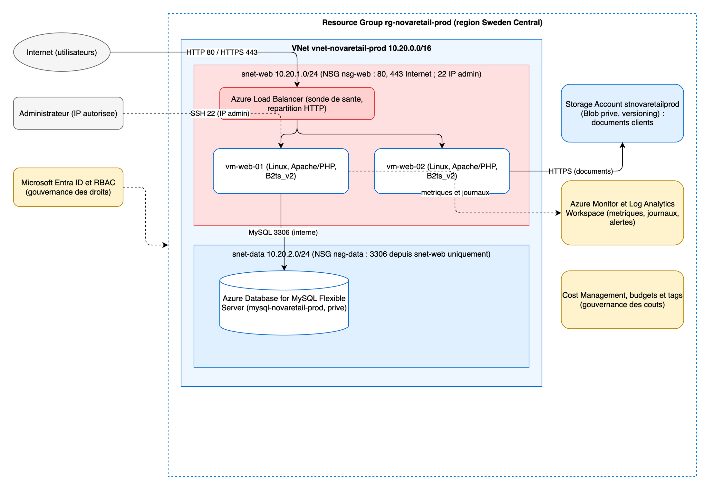

L'application de gestion de commandes de NovaRetail repose aujourd'hui sur un serveur Linux unique qui héberge en même temps le serveur web Apache et PHP, la base de données MySQL et les fichiers clients. Les sauvegardes sont manuelles et hebdomadaires, aucune supervision n'est en place, et un compte administrateur est partagé entre plusieurs personnes. Cette concentration crée des risques dans chaque grand domaine d'exploitation.
| Domaine | Risque identifié | Impact possible sur le SI |
|---|---|---|
| Disponibilité | Le serveur est unique et sans redondance, ce qui constitue un point de défaillance unique. | La moindre panne matérielle ou logicielle interrompt totalement la prise de commandes et l'activité commerciale. |
| Sécurité | Le compte administrateur est partagé et les couches ne sont pas cloisonnées, tandis que la base et les fichiers sont exposés sur la même machine. | La traçabilité des actions disparaît, une seule compromission donne un accès complet, et les données clients peuvent fuir. |
| Performance | Le web, la base MySQL et le stockage partagent les mêmes ressources sur une seule machine. | Les montées en charge provoquent de la contention et des lenteurs, sans possibilité d'absorber un pic de commandes. |
| Exploitation | Aucun tableau de bord ni aucune alerte ne permet de suivre l'état du système. | Les incidents sont détectés tardivement, souvent par les utilisateurs, et le diagnostic est long. |
| Coûts | Aucune estimation des coûts d'exploitation n'existe et le dimensionnement reste figé. | Les dépenses ne sont ni mesurées ni optimisées, et tout surdimensionnement passe inaperçu. |
| Sauvegarde | La sauvegarde est manuelle, hebdomadaire et conservée sur le même périmètre que la production. | La perte de données peut atteindre une semaine entière, sans garantie de restauration ni test de reprise. |
Les besoins techniques prioritaires qui découlent de cette analyse sont la haute disponibilité de la couche web, l'externalisation de la base et des fichiers vers des services dédiés, la segmentation et le filtrage du réseau, la mise en place d'une supervision avec des alertes, l'usage de comptes nominatifs avec des droits limités, et une sauvegarde automatisée et testée.
Le tableau associe chaque besoin de NovaRetail à un service Azure, en justifiant le choix selon les critères de coût, de sécurité, de disponibilité et d'exploitabilité.
| Besoin | Service Azure proposé | Justification |
|---|---|---|
| Hébergement applicatif | Azure Virtual Machines, deux machines Linux placées derrière un répartiteur de charge | Cette approche en infrastructure as a service permet une migration proche de l'existant Apache et PHP, tout en supprimant le point de défaillance unique grâce à la redondance des instances. |
| Réseau isolé | Azure Virtual Network avec des subnets séparés | Le réseau virtuel isole logiquement l'application et permet de séparer la couche web de la couche données afin de limiter les déplacements latéraux en cas d'incident. |
| Filtrage réseau | Network Security Groups appliqués aux subnets | Les groupes de sécurité réseau restreignent les flux aux seuls ports nécessaires et limitent l'exposition de chaque couche. |
| Stockage de documents | Azure Storage Account avec des conteneurs Blob privés | Le stockage objet externalise les fichiers clients hors des machines, assure leur durabilité par réplication et autorise le versioning et les politiques de cycle de vie. |
| Base de données managée | Azure Database for MySQL Flexible Server | Le choix d'un service managé plutôt qu'une base installée sur machine virtuelle délègue à Azure les sauvegardes automatiques, les correctifs, la supervision et les options de haute disponibilité, ce qui réduit la charge d'exploitation et le risque humain. Le choix du moteur MySQL plutôt qu'Azure SQL conserve la compatibilité avec la base MySQL déjà utilisée par NovaRetail, ce qui évite une migration de moteur et une réécriture applicative. |
| Supervision | Azure Monitor relié à un Log Analytics Workspace | La supervision centralise les métriques et les journaux, permet d'analyser la performance et de déclencher des alertes actionnables. |
| Gestion des coûts | Microsoft Cost Management avec des budgets et des alertes | Cet outil rend les dépenses visibles, les rattache à des tags et prévient en cas de dépassement budgétaire. |
| Gestion des droits | Microsoft Entra ID associé au contrôle d'accès basé sur les rôles | Les comptes deviennent nominatifs et chaque personne ne reçoit que les droits strictement nécessaires, selon le principe du moindre privilège. |
| Journalisation et audit | Journal d'activité et paramètres de diagnostic exportés vers Log Analytics | La traçabilité des opérations de gestion est conservée et interrogeable, ce qui permet de répondre aux questions d'audit. |
Chaque service se classe dans une catégorie de responsabilité. Les machines virtuelles, le réseau virtuel et les groupes de sécurité réseau relèvent de l'infrastructure as a service, où l'équipe garde la responsabilité du système et de l'application. La base MySQL managée, le compte de stockage et la supervision relèvent de la plateforme as a service, où Azure prend en charge une partie de l'exploitation. La gestion des identités et le suivi des coûts relèvent de la gouvernance, qui encadre les droits et les dépenses de façon transverse.
L'architecture cible regroupe toutes les ressources dans un même Resource Group nommé rg-novaretail-prod, déployé dans la région Sweden Central. Un Virtual Network nommé vnet-novaretail-prod couvre la plage 10.20.0.0/16 et se découpe en deux subnets. Le subnet web snet-web en 10.20.1.0/24 accueille les deux machines applicatives, et le subnet données snet-data en 10.20.2.0/24 accueille les services de données et les connexions privées.
La couche web comprend deux machines virtuelles Linux nommées vm-web-01 et vm-web-02, de taille Standard_B2ts_v2, qui exécutent Apache et PHP. Ces machines sont placées derrière un répartiteur de charge Azure Load Balancer qui répartit le trafic et s'appuie sur une sonde de santé. Le groupe de sécurité réseau nsg-web autorise les ports 80 et 443 depuis Internet et le port 22 uniquement depuis l'adresse de l'administrateur. Le groupe de sécurité réseau nsg-data autorise le port 3306 uniquement depuis le subnet web et refuse tout accès depuis Internet.
La base de données est un service Azure Database for MySQL Flexible Server, rattaché au subnet données et non exposé publiquement. Les fichiers clients sont déplacés vers un Storage Account privé avec versioning. Azure Monitor et un Log Analytics Workspace collectent les métriques et les journaux de l'ensemble des ressources. Microsoft Entra ID et le contrôle d'accès basé sur les rôles encadrent l'administration, et des tags cohérents sont appliqués pour la gouvernance et le suivi des coûts.
Les flux principaux sont les suivants. Le trafic des utilisateurs arrive depuis Internet vers le répartiteur de charge, qui le distribue vers les deux machines web sur le port 80 ou 443. Les machines web accèdent à la base MySQL sur le port 3306 depuis le subnet web uniquement. Les machines web accèdent au Storage Account en HTTPS pour lire et écrire les documents. L'administration passe par le port 22 restreint à l'adresse de l'administrateur, avec Azure Bastion comme évolution recommandée. Toutes les ressources envoient leurs métriques et leurs journaux vers le Log Analytics Workspace.
Le schéma correspondant est fourni dans le dossier schema, au format draw.io modifiable et au format image exporté.
La redondance de la couche web derrière un répartiteur de charge répond au besoin de disponibilité en supprimant le point de défaillance unique. Le choix d'une base managée plutôt qu'une base installée sur machine virtuelle décharge l'équipe des sauvegardes et des correctifs, ce qui réduit le risque d'exploitation. L'externalisation des fichiers vers un stockage objet privé améliore la durabilité et la confidentialité des données clients. La segmentation du réseau en deux subnets associés à des groupes de sécurité restreints applique une défense en profondeur. La supervision et la gouvernance des identités complètent l'ensemble pour rendre l'environnement exploitable et auditable.
Pour une cible de production plus exigeante, une Application Gateway avec un pare-feu applicatif web pourrait remplacer le simple répartiteur de charge, et un Private Endpoint pourrait isoler complètement la base et le stockage du réseau public.

Cette partie audite l'architecture proposée par un prestataire externe pour NovaRetail avant toute mise en production. L'objectif est de repérer les anomalies, de prioriser les risques et de proposer des corrections réalistes.
Le tableau ci-dessous relève quatorze anomalies, chacune rattachée à un domaine et associée à son risque principal.
| No | Anomalie identifiée | Domaine | Risque principal |
|---|---|---|---|
| 1 | Le port MySQL 3306 est accessible depuis Internet. | Sécurité | La base de données clients est exposée à des accès non autorisés, des injections et des exfiltrations. |
| 2 | Le port SSH est ouvert depuis 0.0.0.0/0. | Sécurité | Les machines subissent des attaques par force brute et peuvent être compromises. |
| 3 | Les mots de passe administrateurs sont stockés dans un fichier terraform.tfvars versionné dans Git. | Sécurité et IaC | Les identifiants fuient dès que le dépôt est partagé ou cloné. |
| 4 | Le state Terraform est local sur le poste d'un administrateur. | IaC | Le state peut être perdu, il n'offre aucun verrouillage et il peut contenir des données sensibles. |
| 5 | Le Storage Account autorise l'accès public aux blobs. | Sécurité | Les documents clients deviennent accessibles publiquement sur Internet. |
| 6 | Le versioning et la suppression réversible ne sont pas activés sur le Storage Account. | Exploitation | Une suppression ou un écrasement de fichier est irréversible. |
| 7 | Aucune sauvegarde n'est configurée. | Disponibilité | Une panne ou une erreur entraîne une perte définitive de données sans reprise possible. |
| 8 | Les deux machines web ne sont pas placées derrière un répartiteur de charge. | Disponibilité | La panne d'une machine interrompt le service et la charge n'est pas répartie. |
| 9 | La base MySQL est installée sur une machine dans le même subnet que les serveurs web. | Sécurité et disponibilité | L'absence de cloisonnement facilite les déplacements latéraux et la base partage les ressources du web. |
| 10 | Le réseau se limite à un seul Virtual Network 10.0.0.0/24 avec un seul subnet. | Réseau et sécurité | L'absence de segmentation empêche tout filtrage par couche et augmente la surface d'exposition. |
| 11 | Un seul Resource Group contient les ressources de développement et de production. | Gouvernance | Une manipulation sur le développement peut affecter la production. |
| 12 | Aucune séparation claire n'existe entre l'environnement de test et l'environnement de production. | Gouvernance | Un changement de test peut impacter directement la production. |
| 13 | Plusieurs utilisateurs humains disposent du rôle Owner sur la souscription. | Sécurité et gouvernance | Les droits sont excessifs et un seul compte compromis donne le contrôle total. |
| 14 | Aucun Log Analytics Workspace, aucune alerte, aucune stratégie de tags et aucun budget ne sont en place. | Exploitation et FinOps | Les incidents ne sont pas détectés et les coûts ne sont ni attribuables ni maîtrisés. |
Parmi les anomalies relevées, les cinq risques les plus critiques sont les suivants.
| Risque critique | Niveau | Justification | Correction prioritaire |
|---|---|---|---|
| Base MySQL exposée sur Internet par le port 3306 | Critique | La base contient les données clients et commandes, son exposition directe est la porte d'entrée la plus dangereuse. | Fermer tout accès depuis Internet, placer la base dans un subnet privé ou un service managé non exposé, et n'autoriser que le subnet web. |
| Accès SSH ouvert depuis 0.0.0.0/0 | Critique | Un port d'administration ouvert au monde entier est en permanence attaqué et permet une prise de contrôle des machines. | Restreindre l'accès à l'adresse de l'administrateur, puis évoluer vers Azure Bastion. |
| Secrets versionnés dans Git | Critique | Un mot de passe administrateur présent dans le dépôt est une fuite d'identifiants difficile à rattraper. | Retirer le secret du dépôt, l'ajouter au fichier d'exclusion, le stocker dans Azure Key Vault et procéder à une rotation. |
| Accès public au Storage Account | Élevé | Les documents clients sont des données sensibles qui ne doivent jamais être publiques. | Désactiver l'accès public aux blobs, rendre les conteneurs privés et activer la suppression réversible. |
| Rôle Owner attribué à plusieurs personnes | Élevé | Des droits trop larges augmentent la surface d'attaque et le risque d'erreur ou d'abus. | Appliquer le principe du moindre privilège, réserver le rôle Owner et utiliser des rôles plus restreints. |
L'architecture corrigée correspond à l'architecture cible décrite dans la partie 1 et réellement déployée dans la partie 3. Le schéma se trouve dans le dossier schema. Les corrections apportées répondent point par point aux anomalies relevées.
La séparation des environnements est assurée en isolant le développement et la production dans des groupes de ressources distincts, et en paramétrant le code Terraform par une variable d'environnement, ce qui permet de déployer chaque environnement à partir du même code sans les mélanger. La segmentation du réseau remplace le subnet unique par un Virtual Network plus large découpé en un subnet web et un subnet de données. Le filtrage réseau est confié à des groupes de sécurité qui n'ouvrent que les ports utiles, à savoir les ports 80 et 443 depuis Internet et le port 22 depuis la seule adresse de l'administrateur.
Les expositions inutiles à Internet sont supprimées. La base n'est plus accessible que depuis le subnet web sur le port 3306, et l'évolution recommandée consiste à retirer les adresses publiques des machines au profit d'un accès privé. La base MySQL installée sur une machine est remplacée par le service managé Azure Database for MySQL, ce qui apporte les sauvegardes automatiques et les correctifs. Les secrets sont gérés de façon sécurisée, hors du dépôt, avec un stockage dans Azure Key Vault comme cible. Le state Terraform est externalisé dans un backend distant protégé, sur un compte de stockage dédié avec verrouillage et contrôle d'accès.
La supervision, les alertes, les sauvegardes et les tags sont mis en place avec un espace Log Analytics, des alertes de processeur et de disponibilité, les sauvegardes automatiques de la base managée et une stratégie de tags appliquée par le code. La maîtrise des coûts est assurée par un budget mensuel et des notifications de dépassement.
Le plan de vérification ci-dessous permet de confirmer que les corrections sont bien appliquées, avec au moins un contrôle par domaine.
La vérification réseau consiste à lister les règles des groupes de sécurité et à confirmer que le port 3306 n'est ouvert que depuis le subnet web et que le port 22 est restreint à l'adresse de l'administrateur. Un test complémentaire vérifie qu'une tentative de connexion à la base depuis Internet échoue.
La vérification de sécurité et de RBAC consiste à lister les attributions de rôles sur la souscription et à confirmer qu'un seul compte dispose du rôle Owner. Elle inclut un contrôle qui s'assure qu'aucun secret n'est présent dans le dépôt Git.
La vérification Terraform consiste à exécuter un plan qui ne doit annoncer aucune dérive, et à confirmer que le state est stocké dans un backend distant et que le fichier de variables sensibles est exclu du dépôt.
La vérification du monitoring consiste à confirmer la présence de l'espace Log Analytics et des règles d'alerte, et à vérifier que les alertes sont actives et reliées à un groupe d'action.
La vérification FinOps consiste à confirmer la présence du budget et de ses seuils, et à exécuter le script d'inventaire pour s'assurer que toutes les ressources portent les tags obligatoires.
Le code complet se trouve dans le dossier terraform. Il décrit l'architecture cible de la partie 1 et il a été déployé réellement sur l'abonnement de formation.
Le projet est découpé en fichiers thématiques plutôt qu'en un seul fichier, afin qu'une personne qui ne l'a pas écrit puisse le comprendre rapidement. Le rôle de chaque fichier est le suivant.
| Fichier | Rôle |
|---|---|
versions.tf |
Déclare la version minimale de Terraform et les fournisseurs azurerm et random. |
providers.tf |
Configure le fournisseur Azure et épingle l'abonnement de formation pour éviter tout déploiement sur un autre compte. |
variables.tf |
Déclare les paramètres d'entrée du projet. |
locals.tf |
Calcule le préfixe de nommage et les tags communs appliqués à toutes les ressources. |
network.tf |
Crée le groupe de ressources, le réseau virtuel et les deux subnets. |
security.tf |
Crée les deux groupes de sécurité réseau, leurs règles et leurs associations. |
compute.tf |
Crée les adresses publiques, les interfaces réseau et les deux machines web. |
loadbalancer.tf |
Crée le répartiteur de charge, le pool de backend, la sonde de santé et la règle de répartition. |
storage.tf |
Crée le compte de stockage privé et son conteneur. |
database.tf |
Crée la zone DNS privée, le lien réseau, le serveur MySQL managé et la base applicative. |
monitoring.tf |
Crée l'espace de travail Log Analytics. |
outputs.tf |
Expose les informations utiles après le déploiement. |
templates/cloud-init.yml |
Installe Apache et PHP au premier démarrage des machines. |
terraform.tfvars.example |
Donne un exemple de valeurs à recopier sans secret versionné. |
README.md |
Explique le rôle des fichiers et la procédure d'utilisation. |
Le sujet demande au minimum les fichiers main.tf, variables.tf, outputs.tf, terraform.tfvars et un README.md. Le rôle attendu d'un fichier main.tf est ici réparti dans les fichiers thématiques network.tf, security.tf, compute.tf, loadbalancer.tf, storage.tf, database.tf et monitoring.tf, ce qui améliore la lisibilité sans changer le résultat.
Le projet crée l'ensemble des ressources attendues, à savoir un Resource Group, un réseau virtuel, deux subnets, deux groupes de sécurité réseau avec des règles HTTP, HTTPS et SSH maîtrisées, deux machines virtuelles Linux configurées par cloud-init, un répartiteur de charge avec sonde et règle, un compte de stockage privé, une base de données MySQL managée et un espace de travail Log Analytics pour la supervision.
Les règles de filtrage suivent le principe du moindre accès. Le groupe de sécurité du subnet web autorise les ports 80 et 443 depuis Internet et le port 22 uniquement depuis l'adresse de l'administrateur. Le groupe de sécurité du subnet de données autorise le port 3306 uniquement depuis la plage du subnet web, ce qui empêche toute exposition directe de la base sur Internet.
Le code utilise des variables pour tous les éléments demandés, ce qui le rend réutilisable sur plusieurs environnements sans modification. Les variables couvrent le nom du projet, la région Azure, l'environnement, le préfixe de nommage calculé à partir du projet et de l'environnement, la plage d'adressage du réseau virtuel et la taille des machines. Le mot de passe de la base est déclaré comme variable sensible afin qu'il n'apparaisse pas en clair dans les sorties.
Le projet expose cinq outputs. Les trois principaux sont le nom du groupe de ressources, l'adresse publique du point d'entrée web sur le répartiteur de charge et le nom du compte de stockage. Les deux autres exposent les adresses des machines web et le nom de domaine privé du serveur MySQL, ce qui facilite l'administration et la connexion applicative.
Le déploiement a été réalisé réellement avec la séquence Terraform habituelle, à savoir l'initialisation, le formatage, la validation, la prévisualisation par un plan, puis l'application. Les preuves de validation sont rassemblées dans le dossier screenshots et comprennent le groupe de ressources, le réseau virtuel et ses subnets, les groupes de sécurité réseau, les machines web, le point d'entrée HTTP et un extrait lisible du résultat du déploiement.
L'application a réussi avec la mention finale indiquant vingt neuf ressources ajoutées, sans modification ni suppression. Les serveurs web répondent à travers le répartiteur de charge, et chaque machine renvoie sa propre page, ce qui confirme la répartition de charge. Les valeurs réelles produites par le déploiement sont les suivantes.
| Sortie | Valeur réelle |
|---|---|
| Groupe de ressources | rg-novaretail-prod |
| Adresse publique du point d'entrée web | 20.91.214.201 |
| Adresses des machines web | 4.223.75.235 et 20.240.138.86 |
| Compte de stockage | stnovaretailp2fxae |
| Serveur MySQL managé | mysql-novaretail-prod-p2fxae.mysql.database.azure.com |
Le test du point d'entrée renvoie la page de la première machine, et le test direct de chaque machine renvoie sa page propre, ce qui valide à la fois la couche web et la répartition. L'inventaire des ressources confirme la présence du groupe de ressources, du réseau virtuel et de ses deux subnets, des deux groupes de sécurité réseau, des deux machines avec leurs interfaces et adresses, du répartiteur de charge, du compte de stockage, de la base MySQL managée avec sa zone DNS privée, et de l'espace de travail Log Analytics. Les extraits du résultat de déploiement et de l'inventaire sont fournis dans le dossier screenshots.
L'inventaire ci-dessous reprend les ressources réellement déployées dans le groupe rg-novaretail-prod, en région Sweden Central. Toutes les ressources portent les mêmes tags communs, à savoir application, environment, owner, cost_center, criticality, review_date et managed_by, ce qui facilite la lecture et le pilotage. La colonne du groupe de ressources est identique pour toutes les lignes, elle vaut rg-novaretail-prod.
| Nom | Type | Région | Rôle dans l'architecture |
|---|---|---|---|
| vnet-novaretail-prod | Virtual Network | Sweden Central | Réseau privé qui isole l'application et porte les subnets. |
| snet-web et snet-data | Subnets | Sweden Central | Séparent la couche web de la couche données. |
| nsg-novaretail-prod-web | Network Security Group | Sweden Central | Filtre les flux du subnet web et n'ouvre que les ports utiles. |
| nsg-novaretail-prod-data | Network Security Group | Sweden Central | Restreint l'accès à la base au seul subnet web. |
| vm-novaretail-prod-web-1 | Virtual Machine | Sweden Central | Première machine applicative qui sert l'application web. |
| vm-novaretail-prod-web-2 | Virtual Machine | Sweden Central | Seconde machine applicative qui assure la redondance. |
| nic-novaretail-prod-web-1 et 2 | Network Interfaces | Sweden Central | Connectent les machines au subnet web. |
| vm-novaretail-prod-web-1 et 2 OsDisk | Managed Disks | Sweden Central | Disques système des deux machines web. |
| pip-novaretail-prod-web-1 et 2 | Public IP Addresses | Sweden Central | Adresses publiques utilisées pour l'administration. |
| lb-novaretail-prod-web | Load Balancer | Sweden Central | Répartit le trafic entrant vers les deux machines web. |
| pip-novaretail-prod-lb | Public IP Address | Sweden Central | Adresse publique du point d'entrée web. |
| mysql-novaretail-prod | Azure Database for MySQL | Sweden Central | Base de données managée des commandes, non exposée. |
| novaretail.private.mysql... | Private DNS Zone | Global | Résolution privée du nom du serveur MySQL. |
| stnovaretail... | Storage Account | Sweden Central | Stockage privé des documents clients. |
| law-novaretail-prod | Log Analytics Workspace | Sweden Central | Espace de supervision des métriques et des journaux. |
L'inventaire complet au format texte est produit automatiquement par le script d'exploitation et conservé dans le dossier exports.
La stratégie de tags repose sur un ensemble de clés appliquées de façon uniforme à toutes les ressources par le code Terraform. Chaque clé répond à un besoin précis d'exploitation ou de pilotage des coûts.
| Tag | Exemple | Utilité |
|---|---|---|
| environment | prod | Distingue les environnements et permet de filtrer ou d'arrêter les ressources hors production. |
| application | novaretail | Relie chaque ressource à l'application concernée. |
| owner | equipe-cloud | Identifie l'équipe responsable et facilite l'escalade en cas d'incident. |
| cost_center | formation | Affecte les coûts à un budget pour le suivi FinOps. |
| criticality | medium | Aide à prioriser la surveillance et les actions de sécurité. |
| review_date | 2026-12-31 | Fixe une date de revue pour éviter que des ressources soient oubliées. |
Les tags sont essentiels pour l'administration et le FinOps. Du côté de l'administration, ils permettent de retrouver rapidement toutes les ressources d'une application ou d'un environnement, d'identifier le responsable d'une ressource et de cibler les actions de maintenance. Du côté du FinOps, ils permettent de ventiler les coûts par application, par environnement et par centre de coût, de poser des budgets précis et de repérer les ressources sans propriétaire qui risquent de générer des dépenses non maîtrisées. Comme les tags sont appliqués par Terraform, ils restent cohérents à chaque déploiement et ne dépendent pas d'une saisie manuelle.
Le script scripts/inventaire_exploitation.sh automatise un contrôle d'exploitation utile et a été exécuté réellement sur le groupe déployé.
L'objectif du script est de produire un inventaire des ressources d'un groupe donné, de vérifier que chaque ressource porte un tag obligatoire et d'afficher l'état des machines virtuelles. Cette tâche est utile au quotidien pour garder un inventaire à jour, contrôler la gouvernance des tags et vérifier rapidement la disponibilité des machines.
Les entrées attendues sont le nom du groupe de ressources, qui est obligatoire, et le nom du tag obligatoire à contrôler, qui est optionnel et vaut owner par défaut.
La sortie comprend un fichier CSV d'inventaire écrit dans le dossier exports, un résumé affiché à l'écran avec le nombre de ressources, la liste des ressources qui ne portent pas le tag obligatoire, et un tableau de l'état des machines virtuelles.
La logique principale s'appuie sur Azure CLI. Le script liste les ressources avec leur type, leur région et la valeur du tag contrôlé, puis il interroge séparément les ressources dont le tag est absent, et enfin il récupère l'état d'alimentation des machines virtuelles. Il commence par la directive de robustesse qui arrête l'exécution en cas d'erreur ou de variable non définie, il centralise ses paramètres dans des variables, et il n'effectue aucune modification.
Les limites du script sont les suivantes. Il lit l'état courant et ne corrige pas automatiquement les écarts, ce qui est volontaire pour éviter toute action non maîtrisée. Il dépend d'une session Azure CLI active et de droits de lecture sur le groupe. Il contrôle un seul tag obligatoire à la fois, même s'il pourrait être étendu pour vérifier une liste de tags.
Lors de l'exécution réelle, le script a inventorié dix huit ressources, a confirmé que toutes portaient le tag owner, et a montré les deux machines web en état d'exécution. La trace de cette exécution est conservée dans le dossier screenshots.
Le dispositif décrit ci-dessous a été déployé réellement sur le groupe rg-novaretail-prod au moyen du code Terraform, ce qui garantit qu'il est reproductible. Les preuves sont conservées dans le dossier screenshots.
La supervision s'appuie sur Azure Monitor et sur l'espace de travail Log Analytics law-novaretail-prod, qui centralise les métriques et les journaux. Les indicateurs retenus couvrent la disponibilité, la performance, la base de données, le stockage et le coût.
| Élément surveillé | Métrique ou journal | Seuil proposé | Action attendue |
|---|---|---|---|
| Disponibilité applicative | Disponibilité des machines derrière le répartiteur de charge, métrique DipAvailability | Inférieure à 100 pour cent sur cinq minutes | Vérifier les machines et la sonde de santé, alerte de sévérité élevée envoyée à l'équipe. |
| Processeur des machines web | Métrique Percentage CPU des machines | Supérieur à 70 pour cent sur cinq minutes | Analyser la charge, envisager une montée en taille ou en nombre d'instances. |
| Base de données | Processeur et nombre de connexions du serveur MySQL managé | Processeur supérieur à 80 pour cent | Analyser les requêtes et ajuster le niveau de service. |
| Stockage | Transactions et capacité du compte de stockage | Capacité proche de la limite définie | Vérifier l'usage et la politique de cycle de vie. |
| Coût | Budget mensuel consommé sur le groupe de ressources | Quatre vingt pour cent du budget | Analyser les ressources et arrêter celles qui sont inutiles. |
Deux alertes ont été créées et sont actives. La première se déclenche lorsque le processeur de la première machine web dépasse 70 pour cent pendant cinq minutes. La seconde se déclenche lorsque la disponibilité des machines derrière le répartiteur de charge diminue. Les deux alertes sont reliées au groupe d'action ag-novaretail-prod-ops, qui notifie l'équipe d'exploitation. À ces deux alertes s'ajoutent les notifications de budget à quatre vingt pour cent et à cent pour cent.
Un tableau de bord d'exploitation regroupe ces indicateurs dans le portail afin de répondre aux questions de pilotage, à savoir si le service fonctionne, si la performance se dégrade et si le coût reste maîtrisé. Les personnes concernées par les alertes sont les membres de l'équipe d'exploitation, joints par le groupe d'action commun.
Les principaux postes de coût de l'architecture sont les deux machines web et leurs disques, le répartiteur de charge avec ses adresses publiques, le serveur MySQL managé, le compte de stockage et l'espace de travail Log Analytics. Les machines et la base représentent la part la plus importante, car elles sont actives en continu.
Les risques de dépassement budgétaire viennent surtout des machines laissées allumées en dehors des périodes d'usage, de la base toujours active, des adresses publiques réservées et du volume de journaux conservés. L'absence de suivi favoriserait l'apparition de ressources oubliées.
Le suivi repose sur les tags déjà appliqués, en particulier application, environment, owner et cost_center, qui permettent de ventiler les coûts par projet et par équipe. Un budget mensuel de cinquante euros a été défini sur le groupe de ressources, avec une notification à quatre vingt pour cent du montant réel et une notification à cent pour cent du montant prévu.
Trois pistes d'optimisation à court terme sont proposées. La première consiste à arrêter et libérer les machines en dehors des périodes d'usage, ce qui supprime le coût de calcul. La deuxième consiste à supprimer les adresses publiques directes des machines pour ne garder que le point d'entrée du répartiteur de charge. La troisième consiste à ajuster la taille des machines et le niveau de la base selon les métriques observées.
Deux pistes d'optimisation à moyen terme complètent l'ensemble. La première consiste à souscrire des réservations ou un plan d'économie lorsque l'usage devient stable et prévisible. La seconde consiste à appliquer une politique de cycle de vie sur le compte de stockage et à limiter la durée de conservation des journaux, afin de réduire les coûts de stockage dans la durée.
La revue ci-dessous reprend la posture réellement déployée et signale les risques résiduels avec leur mesure corrective.
| Risque | Description | Criticité | Mesure corrective |
|---|---|---|---|
| Accès administrateur trop ouvert | L'accès SSH est ouvert sur les machines, mais il est déjà restreint à l'adresse de l'administrateur. | Moyenne | Conserver la restriction par adresse et faire évoluer vers Azure Bastion pour supprimer les adresses publiques. |
| Exposition réseau | Les machines portent des adresses publiques, alors que seule l'entrée du répartiteur de charge a besoin d'être exposée. | Moyenne | Retirer les adresses publiques des machines et passer par un accès privé. |
| Exposition de la base | La base MySQL est managée et privée, accessible uniquement depuis le subnet web sur le port 3306. | Faible | Maintenir l'accès privé et envisager un point de terminaison privé pour renforcer l'isolement. |
| Filtrage réseau | Les groupes de sécurité limitent déjà les flux aux ports utiles. | Faible | Réviser régulièrement les règles et fermer tout port devenu inutile. |
| Protection du stockage | Le compte de stockage est privé, en TLS 1.2, sans accès public aux blobs, avec versioning. | Faible | Ajouter la suppression réversible et une politique de cycle de vie. |
| Gestion des secrets | Le mot de passe de la base est conservé hors du dépôt et n'est pas versionné, mais il reste dans un fichier local. | Moyenne | Stocker les secrets dans Azure Key Vault et utiliser une identité managée. |
| Journaux et audit | L'espace Log Analytics est en place, et le journal d'activité peut y être exporté. | Moyenne | Activer l'export du journal d'activité et des journaux de diagnostic vers l'espace de travail. |
| Chiffrement | Les données sont chiffrées au repos par défaut sur le stockage et la base. | Faible | Vérifier la conformité et documenter les clés. |
| Sauvegarde | La base managée dispose de sauvegardes automatiques, mais aucune restauration n'a été testée. | Moyenne | Définir une politique de sauvegarde et tester une restauration. |
| Droits d'administration | Le contrôle d'accès basé sur les rôles n'a pas encore été restreint au strict nécessaire. | Moyenne | Appliquer le principe du moindre privilège et réserver le rôle Owner à une seule personne. |
| Chiffrement des flux web | Le trafic web est en clair sur le port 80, sans redirection HTTPS. | Moyenne | Mettre en place HTTPS, idéalement via une Application Gateway avec terminaison TLS et pare-feu applicatif. |
Cette note présente l'architecture retenue pour la migration de l'application de gestion de commandes, les bénéfices attendus, les risques résiduels, les arbitrages, un plan d'action priorisé et les limites de la proposition.
L'architecture retenue répartit la charge web sur deux machines placées derrière un répartiteur de charge, externalise la base de données vers un service MySQL managé et privé, déplace les documents vers un compte de stockage privé, et met en place une supervision centralisée avec des alertes et un budget. L'ensemble est décrit en code Terraform, ce qui rend les déploiements reproductibles.
Les bénéfices attendus sont l'amélioration de la disponibilité grâce à la redondance de la couche web, la réduction de la charge d'exploitation grâce aux services managés, l'amélioration de la sécurité grâce à la segmentation du réseau et au filtrage, et une meilleure maîtrise des coûts grâce aux tags, au budget et aux alertes.
Les risques résiduels concernent surtout l'absence de chiffrement du trafic web, la présence d'adresses publiques sur les machines, la conservation locale du secret de la base et l'absence de test de restauration. Ces points sont identifiés et associés à des mesures correctives.
Les arbitrages reflètent l'équilibre entre le coût, la performance et la sécurité. Le répartiteur de charge simple a été retenu pour cette première migration, alors qu'une Application Gateway avec pare-feu applicatif apporterait une sécurité supérieure pour un coût et une complexité plus élevés. La base managée coûte davantage qu'une base installée sur machine, mais elle réduit fortement le risque et la charge d'exploitation.
Le plan d'action priorisé propose, en priorité haute, de mettre en place le chiffrement HTTPS, de stocker le secret de la base dans un coffre et de restreindre le contrôle d'accès. En priorité moyenne, il propose de retirer les adresses publiques des machines au profit d'un accès privé, d'activer l'export des journaux d'activité et de tester une restauration. En priorité plus basse, il propose d'optimiser les coûts par des réservations et une politique de cycle de vie.
Les limites de la proposition tiennent au cadre de l'exercice. L'architecture reste volontairement simple, mono région, et ne couvre pas encore la haute disponibilité multi zone, la reprise après incident formalisée, ni l'intégration continue du déploiement. Ces évolutions relèveraient d'un projet de production ultérieur, à dimensionner selon la criticité réelle de l'application.
Les réponses sont courtes et justifiées, et contextualisées au cas NovaRetail lorsque cela a du sens.
Différence entre IaaS, PaaS et SaaS. Les trois modèles décrivent le niveau de service consommé. En IaaS, le fournisseur livre l'infrastructure brute et le client gère encore le système et l'application, par exemple Azure Virtual Machines. En PaaS, le fournisseur gère la plateforme et le client se concentre sur le code et les données, par exemple Azure App Service ou Azure Database for MySQL. En SaaS, le logiciel est consommé directement comme un service, par exemple Microsoft 365.
Pourquoi préférer une base managée plutôt qu'une base installée sur une machine dans ce cas. Une base managée comme Azure Database for MySQL délègue à Azure les sauvegardes, les correctifs, la supervision et les options de haute disponibilité, ce qui réduit la charge d'exploitation et le risque humain. Pour NovaRetail, dont l'équipe est réduite et dont la base est critique, cette délégation fiabilise le service et remplace les sauvegardes manuelles et irrégulières de l'existant.
Rôle d'un Virtual Network dans Azure. Un Virtual Network est le réseau privé logique d'Azure. Il définit une plage d'adresses privées, héberge les ressources comme les machines, et permet de les segmenter en subnets et de contrôler les flux, ce qui isole l'application et applique une défense en profondeur.
Différence entre un Network Security Group et une règle RBAC. Un Network Security Group filtre le trafic réseau entrant et sortant selon des ports, des protocoles et des adresses. Une règle RBAC accorde à des identités des droits d'action sur des ressources Azure. Le premier protège la couche réseau, le second protège la couche de gestion et les autorisations, et les deux contrôles sont complémentaires.
Pourquoi l'Infrastructure as Code réduit les risques d'exploitation. L'Infrastructure as Code décrit l'infrastructure en code versionné, ce qui la rend reproductible, relisible et traçable. Elle réduit les risques d'exploitation parce qu'elle supprime les manipulations manuelles non documentées, garantit que les environnements sont identiques, permet de prévisualiser les changements avant de les appliquer, et facilite une destruction propre.
Que contient le state Terraform et pourquoi il doit être protégé. Le state contient la correspondance entre les ressources déclarées dans le code et les ressources réellement créées, avec leurs identifiants et parfois des valeurs sensibles. Il doit être protégé parce que sa perte fait perdre le suivi des ressources, parce qu'il peut contenir des secrets, et parce qu'un accès partagé sans verrouillage provoque des conflits. La bonne pratique est un backend distant sécurisé.
Différence entre monitoring, logs et alertes. Le monitoring collecte et suit des indicateurs pour vérifier que le système fonctionne. Les logs sont des événements détaillés qui aident à comprendre pourquoi un comportement se produit. Les alertes sont des règles qui préviennent lorsqu'un seuil ou une condition est atteint. Le monitoring montre l'état, les logs expliquent, et les alertes déclenchent l'action.
Trois métriques utiles pour piloter une application web. On surveille le taux de disponibilité ou le taux d'erreurs HTTP, le temps de réponse ou la latence, et l'utilisation du processeur des machines. On peut y ajouter le nombre de requêtes pour suivre la charge.
Pourquoi les tags sont essentiels pour le FinOps. Les tags rattachent chaque ressource à une application, un environnement, un propriétaire et un centre de coût. Ils sont essentiels au FinOps parce qu'ils permettent de ventiler les coûts, de poser des budgets précis, d'identifier les ressources sans propriétaire et de repérer les dépenses inutiles.
Trois mesures de sécurité prioritaires avant une mise en production. La première mesure consiste à restreindre les accès d'administration, par exemple fermer le SSH au monde entier et le limiter à une adresse ou à un bastion. La deuxième consiste à protéger les secrets dans un coffre plutôt que dans le code. La troisième consiste à appliquer le principe du moindre privilège sur les rôles. On y ajoute le chiffrement des flux et la suppression de toute exposition publique de la base et du stockage.
Objectif principal d'une blockchain dans un système d'information. L'objectif est de fournir une preuve partagée, horodatée et difficile à falsifier d'un événement ou d'une donnée, lorsque plusieurs acteurs doivent se fier à un historique commun sans dépendre d'une autorité unique.
Composant qui permet de détecter qu'une donnée a été modifiée. C'est le hash, c'est-à-dire une empreinte cryptographique du contenu dont la valeur change dès que la donnée est modifiée.
Pourquoi dit-on qu'une blockchain est append-only. Parce qu'on y ajoute de nouvelles transactions sans réécrire l'historique existant, ce qui construit une piste d'audit où une correction se fait par ajout plutôt que par suppression.
À quel type de contexte d'entreprise Hyperledger Fabric est-il surtout adapté. Il est adapté à un contexte où les participants sont connus et identifiés, par exemple un consortium, une chaîne d'approvisionnement, la banque, l'assurance ou l'industrie, avec un besoin de confidentialité et de gouvernance.
À quels usages Ethereum est-il principalement adapté. Il est adapté aux usages où la preuve doit être publique et largement vérifiable, comme les applications décentralisées, les jetons et actifs numériques, et les logiques programmables transparentes.
À quel besoin de traçabilité ou d'intégrité Azure Confidential Ledger répond. Il répond au besoin de disposer d'un registre append-only résistant à la falsification pour des données sensibles, par exemple un journal d'audit inviolable, sans avoir à construire un réseau blockchain complet.
Rôle d'un smart contract. Son rôle est de porter et d'appliquer automatiquement les règles métier qui doivent être partagées et vérifiables, comme créer un actif, vérifier une condition, refuser une opération non conforme ou enregistrer un événement horodaté.
Pourquoi stocke-t-on généralement les documents lourds ou sensibles off-chain. Parce que la blockchain n'est pas faite pour les gros volumes, parce que les données personnelles ne peuvent pas être effacées d'un registre immuable, et parce qu'il suffit d'y inscrire une empreinte pour garantir l'intégrité tout en conservant le document dans un stockage contrôlé.
Que peut provoquer la compromission d'une clé privée. Elle permet de signer des transactions frauduleuses au nom de son propriétaire et peut entraîner une perte de contrôle des actifs ou des opérations, c'est pourquoi elle doit être protégée par un coffre, une rotation et une séparation des rôles.
Bonne pratique pour les données personnelles dans une solution de traçabilité blockchain. La bonne pratique est de ne pas inscrire les données personnelles on-chain et de n'y stocker que leur empreinte, en conservant les données elles-mêmes off-chain dans un stockage sécurisé avec contrôle d'accès, afin de respecter la confidentialité et le droit à l'effacement.